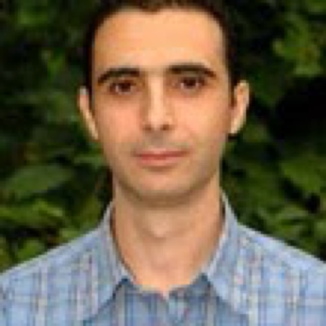

01
Prof. Nadeem is a seasoned investment professional with over 15 years of experience in portfolio management, trading, equity research, and investment strategy, gained through roles at leading Canadian and global banks. He is the Chief Investment Strategist and Chief Operating Officer at Marnoa Private Wealth Counsel Ltd. Prior to this, Nadeem founded Advisor Insights, a consulting practice supporting financial advisors managing over $2 billion in client assets.
02
Prof. Saikat is an assistant professor in the School of Administrative Studies at York University. He has been a visiting scholar at the Melbourne University, Australia. Dr. Sarkar previously taught several undergraduate and graduate finance courses in Tampere University, Finland, Jyvaskyla University, Finland, and Mount Allison University, New Brunswick, Canada.
03

Prof. Nabil Tahani received his PhD in Finance from HEC Montréal. He also has an Engineering degree in Applied Mathematics and Computer Science from the École Nationale des Ponts et Chaussées, Paris, a MSc in Probability and Finance from Pierre and Marie Curie University, Paris, and a MSc in Mathematical Modelling in Economics from La Sorbonne, Paris.
04
Prof. Daniel is an Associate Professor in the School of Administrative Studies. He teaches personal financial planning. His research interests are behavioural finance, financial planning and investment decision making.